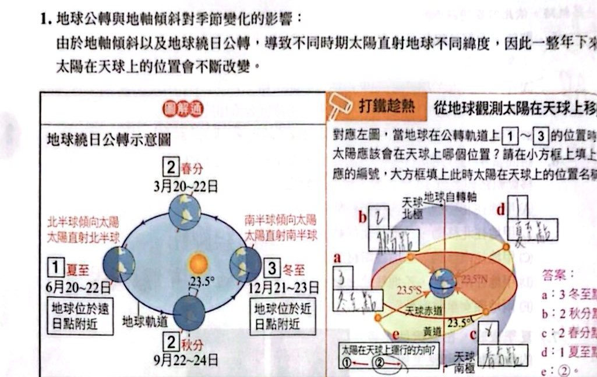
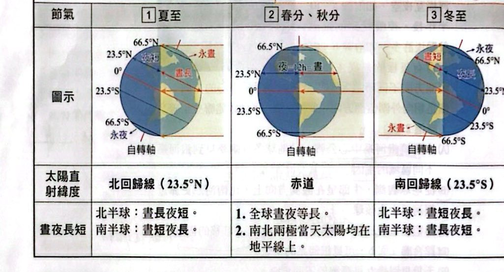
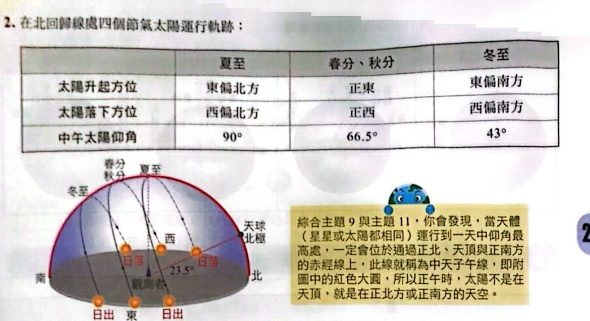
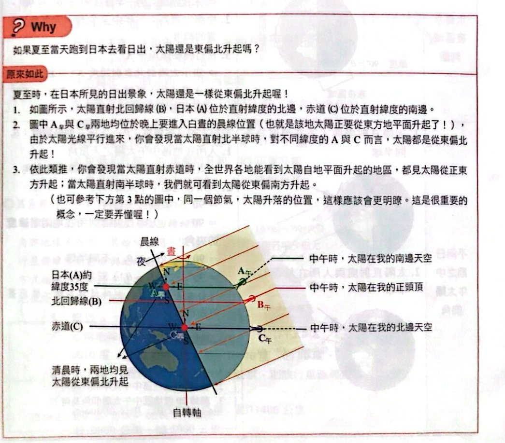
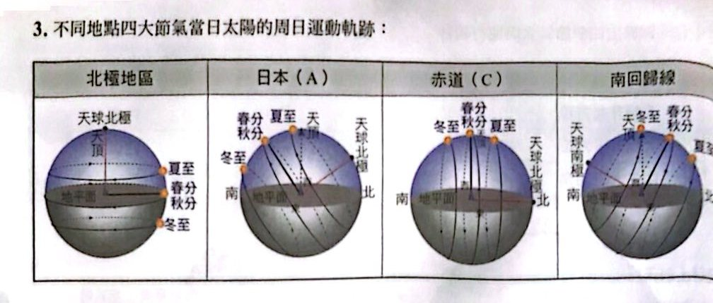
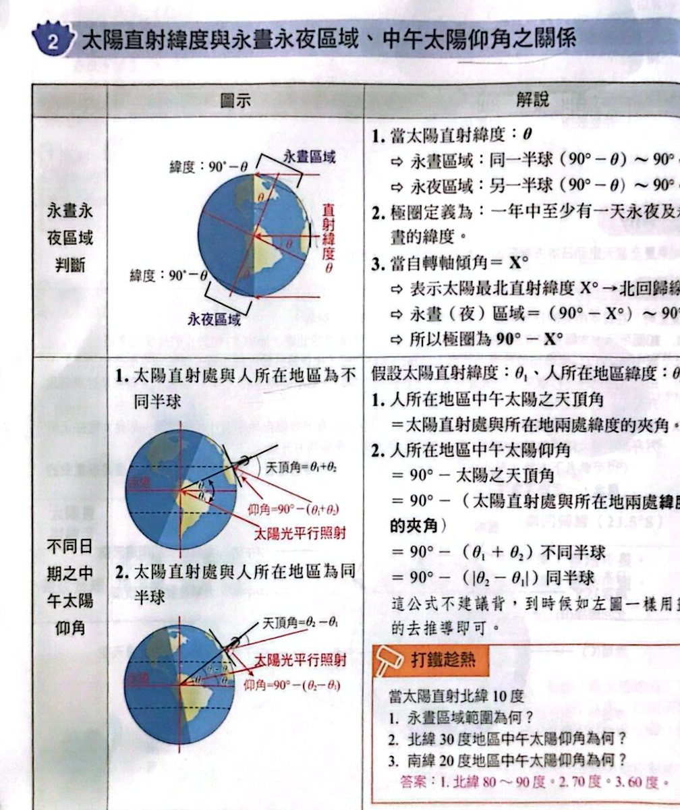
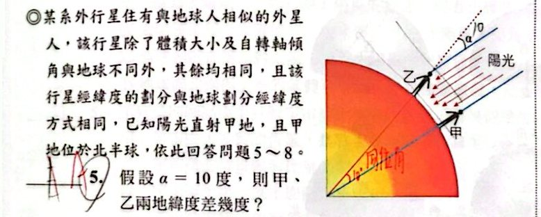
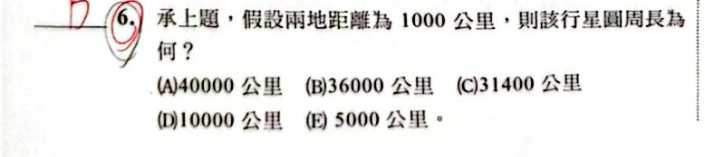

四季變化

地球公轉與地軸傾斜對季節的影響（講義 p.58）

四個節氣的晝夜長短（講義 p.58）

北回歸線處四個節氣的太陽運行軌跡（講義 p.59）

Why：夏至當天跑到日本看日出，太陽還是東偏北升起嗎？（講義 p.59）

不同地點四大節氣當日太陽的周日運動軌跡（講義 p.60）
太陽直射緯度與永晝永夜區域、中午太陽仰角之關係

永晝永夜區域判斷與中午太陽仰角（講義 p.60）
小試身手
看答案與詳解收起
答(C) 丙
解這題在考什麼：左圖是自轉軸傾斜 23.5°、太陽直射緯度偏離赤道的晝夜分界情形；對照右圖公轉軌道上自轉軸的傾向，這一天對應地球位於丙（本章接下來第 2、3 題：這天太陽直射北緯 23.5°，丁與丙相差 90°，是春秋分的位置）。
看答案與詳解收起
答(D) 66.5°
解這題在考什麼：這一天太陽直射 23.5°（夏至，北回歸線）。赤道與直射緯度相差 23.5°，仰角＝90° − 23.5°＝66.5°。
看答案與詳解收起
答(A)；(E)
解這題在考什麼：丁與丙相差 90°（公轉軌道上），所以地球位於春分／秋分（直射赤道）。
- 雪梨在南緯 34°，太陽直射赤道（0°）：中午太陽在北方天空，天頂角＝34° ⇒ (A)。
- 春分／秋分：太陽從正東升起、正西落下 ⇒ 落日方向 (E) 正西。
看答案與詳解收起
答(A)；(E)
解這題在考什麼：太陽直射北緯 22°（約夏至前後，直射在北半球）：
- 在北半球看日出：東偏北升起 ⇒ (A)。
- 太陽直射北半球時，北半球晝長夜短 ⇒ (E)。
看答案與詳解收起
答(A) 10 度
解這題在考什麼：陽光直射甲地（甲地太陽在天頂），乙地陽光與當地鉛直方向夾角為 α＝10°（天頂角）⇒ 兩地緯度差＝天頂角＝10°。


看答案與詳解收起
答(B) 36000 公里
解這題在考什麼：兩地緯度差 10°，距離 1000 公里 ⇒ 每度 100 公里 ⇒ 圓周（360°）＝100×360＝36000 公里。
看答案與詳解收起
答(E) 50°N
解這題在考什麼：自轉軸傾角 30° ⇒ 太陽直射緯度範圍 30°N～30°S。甲地太陽直射（緯度在 30N～30S），乙地與甲地緯度差 10°，所以乙地緯度範圍 40°N～40°S。50°N 不可能。
看答案與詳解收起
答(C) 60 度
解這題在考什麼：極圈緯度＝90° − 自轉軸傾角＝90° − 30°＝60°。
看答案與詳解收起
答(B)(C)(D)
解這題在考什麼：圖中太陽最高點偏向南側（圖左側標示為北），這是北半球中緯度的太陽軌跡；甲軌跡最高、丙最低。
- (A) ✗ 正午太陽偏向南方 ⇒ 位於北半球，不是南半球。
- (B) ○ 圖中每條軌跡都有穿過地平面（太陽會落下），此處不在極圈內，不可能一整天均為白晝。
- (C) ○ 北半球太陽軌跡最高的是夏至，甲軌跡最高 ⇒ 夏至當日軌跡。
- (D) ○ 赤道地區一年四季每天都晝夜等長。
- (E) ✗ 此處在北半球，正午太陽仰角最高處在正南方（或天頂），不是正北方。
看答案與詳解收起
答(B)
解這題在考什麼：北緯 40.7° 夏至中午，太陽直射 23.5°N，天頂角＝40.7° − 23.5°＝17.2°，太陽位在天頂偏南（圖左為南）17.2°。
- (A)(C) 的 40.7° 是緯度，不是夏至的天頂角。
- (B) ✓ 夏至中午太陽位於天頂偏南 17.2°。
- (D) 17.2° 偏北，✗。